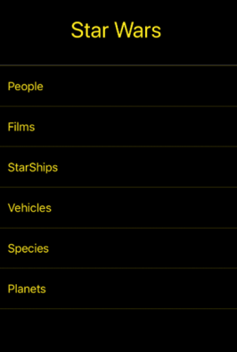
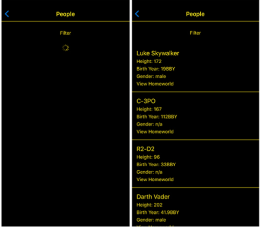

Trong bài này chúng ta sẽ xây dựng dự án Star Wars là một ứng dụng di động cho phép người
dùng lấy thông tin từ vũ trụ Star Wars thông qua việc gọi API Star Wars chính thức. Các thông tin bao gồm:
People (Người): Trong ngữ cảnh của Star Wars, "people" đề cập đến các nhân vật, những người sống và
tham gia
vào
cốt truyện trong các phần của loạt phim Star Wars. Đây là những nhân vật như Luke Skywalker, Princess Leia,
Han
Solo, Darth Vader, Yoda, và nhiều nhân vật khác. Mỗi người trong vũ trụ Star Wars có một câu chuyện và lý lịch
riêng, và họ thường đóng một vai trò quan trọng trong việc phát triển cốt truyện.
Films (Phim): "Film" trong vũ trụ Star Wars đề cập đến các tác phẩm điện ảnh hoặc truyền hình liên
quan đến
thế
giới Star Wars. Đây là các bộ phim và loạt phim như "Star Wars: Episode IV - A New Hope," "Star Wars: Episode
V -
The Empire Strikes Back," "Star Wars: Episode VI - Return of the Jedi," và nhiều tác phẩm khác. Các bộ phim
này là
tạo nên câu chuyện lớn của vũ trụ Star Wars và đã trở thành một phần quan trọng trong văn hóa pop và lịch sử
điện
ảnh.
Starships (Tàu vũ trụ): Starship là các phương tiện vũ trụ lớn được sử dụng để du hành giữa các hành
tinh và
hệ
thống sao trong vũ trụ Star Wars. Đây có thể là những tàu vũ trụ như Millennium Falcon, X-wing, Star
Destroyer, và nhiều loại khác. Các starship thường được sử dụng trong các cuộc chiến đấu không gian và cho
việc di chuyển giữa các hành tinh và vùng không gian khác nhau.
Vehicles (Phương tiện): Vehicle (phương tiện) bao gồm mọi loại phương tiện được sử dụng trên các hành
tinh
hoặc
vùng không gian của vũ trụ Star Wars. Điều này có thể là các phương tiện đường bộ như xe hoặc cơ giới, cũng
như các phương tiện không gian như tàu thám hiểm, speeder bikes, và các loại phương tiện khác.
Species (Loài vật): Species (loài vật) đề cập đến các loài sinh vật và người ngoài hành tinh tồn tại
trong
vũ
trụ Star Wars. Ví dụ về loài vật nổi tiếng trong Star Wars bao gồm Wookiee (loài của Chewbacca), Twi'lek, và
Rodian (loài của Greedo). Mỗi loài thường có đặc điểm riêng biệt và văn hóa độc đáo.
Planets (Hành tinh): Planets (hành tinh) đề cập đến các hành tinh và các vị trí trong vũ trụ Star
Wars. Vũ
trụ
này có nhiều hành tinh khác nhau, mỗi hành tinh có đặc điểm về địa lý, khí hậu, và văn hóa riêng biệt. Ví dụ
về một số hành tinh nổi tiếng trong Star Wars bao gồm Tatooine, Endor, và Hoth.
Dự án được tạo và cấu hình trên nền tảng Snack như các bài tập hay ví dụ
từ các bài trước (tham khảo Tạo ứng
dụng BookApp và TodoApp), sau đó sử dụng thư viện React Navigation (xem lại Bài 2)
để
quản lý navigation giữa các màn hình.
Xây dựng giao diện và lập trình ứng dụng với các API đa nền
Dưới đây là tóm tắt các bước quan trọng trong dự án:
Tạo Các Màn hình và Navigation: Các màn hình như "People", "Films",... được tạo ra và được quản lý trong một
Stack
Navigator bằng React Navigation (xem lại Bài 2). Mỗi màn hình có thể chuyển
đổi qua lại thông qua các nút hoặc tương tác người
dùng.
Gọi API và Xử lý Dữ liệu: Dự án gọi các API của Star Wars (ví dụ: API people hay
API
films) để lấy dữ liệu từ nguồn dữ liệu ngoại tuyến thông qua fetch hoặc axios. Dữ liệu được lấy được lưu trữ trong các biến state.
Hiển thị Dữ liệu: Dữ liệu về nhân vật và phim sau khi được lấy từ API được hiển thị lên giao diện sử dụng
các
component React Native như FlatList để hiển thị danh sách.
Tùy chỉnh Giao diện và Dữ liệu: Giao diện và dữ liệu hiển thị có thể được tùy chỉnh tùy theo yêu cầu cụ thể
của
dự
án, bao gồm việc thêm hình ảnh, mô tả chi tiết, và các yếu tố giao diện khác.
Cài đặt và thực thi ứng dụng trên nền tảng Android hay iOS
Chạy ứng dụng trên nền tảng Web, Android hay iOS. Giao diện:

Khi nhấn chuột vào một tùy chọn, ví dụ People:

Chúng ta dùng hoạt ảnh loading
trong khi chờ dữ liệu tải về. Dữ liệu tải về được hiển thị trên FlatList theo các hàng.
Tham khảo dự án ban đầu về cách lấy và hiển thị thông tin từ vũ trụ Star Wars:
Một dự án bắt đầu với các màn hình (screen) và điều hướng (Navigation):